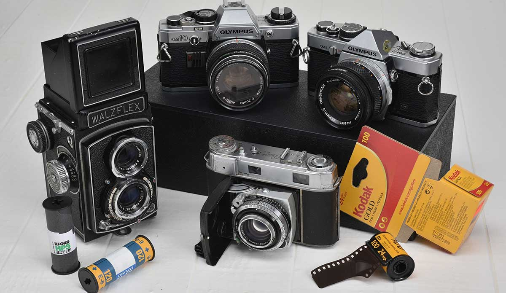

Vannevar Bush speaks to how important it is for technology to progress linearly with the times. He points to the example of automibles, stating that if a Pharaoh had funded the production of an automobile, and was equipped with a complete understanding of its schematics, the car still would have broken down on its first trip. This is because we have new understandings of the intracacies of machines. It is not as simple as having the blueprint and the funding.
While in large strokes I agree with Bush's entiment, I think there is something to be said about the opposite as well. Bush talks a lot about improvemnt in the realm of cameras and photo technology. Now, almost 80 years after the article was written, we have miniature cameras at out fingertips in the form of our smart phones. By making this techonology so advanced and accessible, we have arguably dimished the value of a photograph. What was once an invaluable way to caputure a memory or document a moment has been comoditized to be a dime a dozen. We have lost out on the value of these simple works of art.